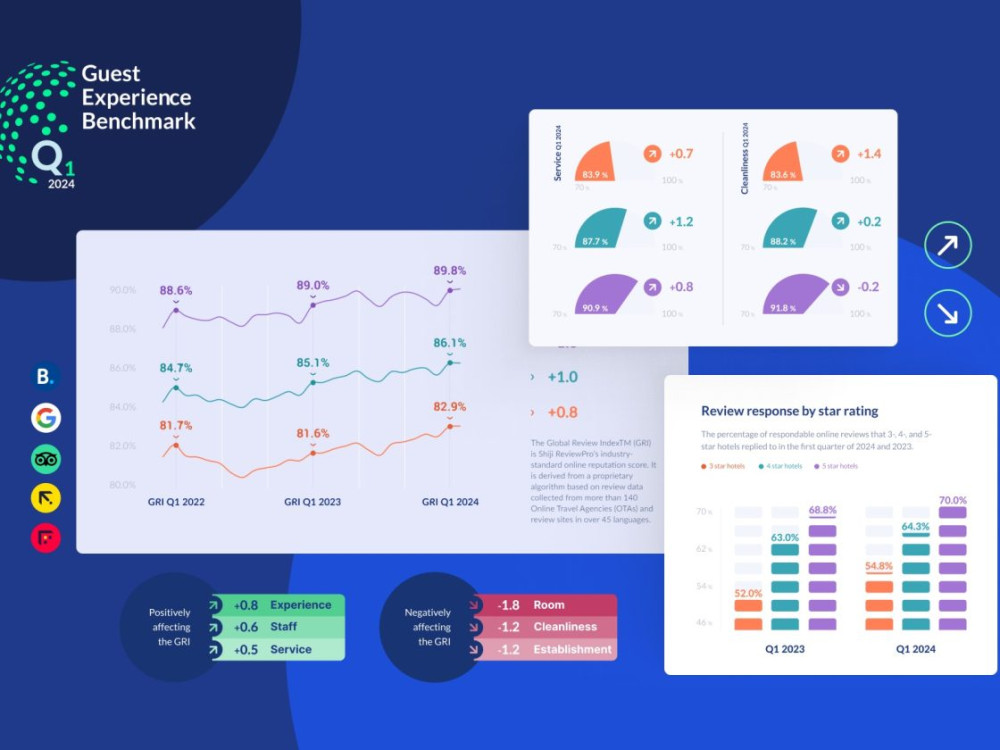
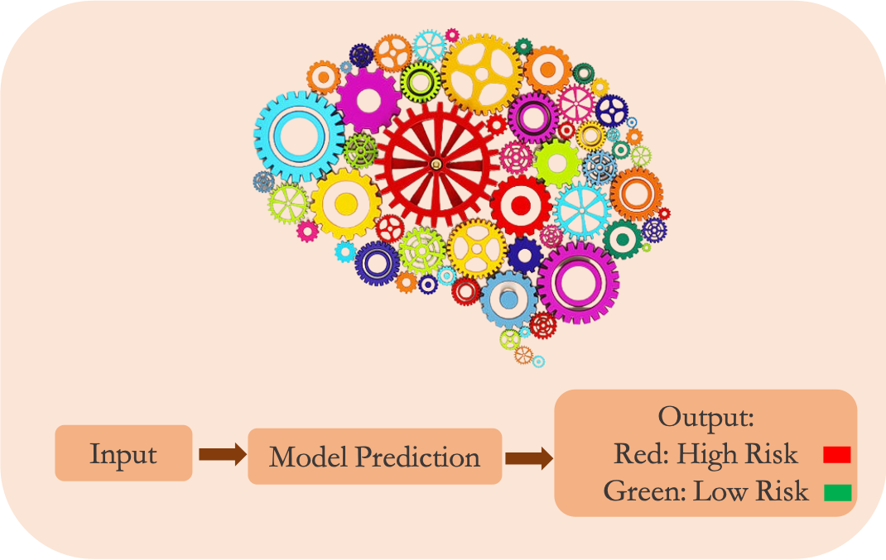
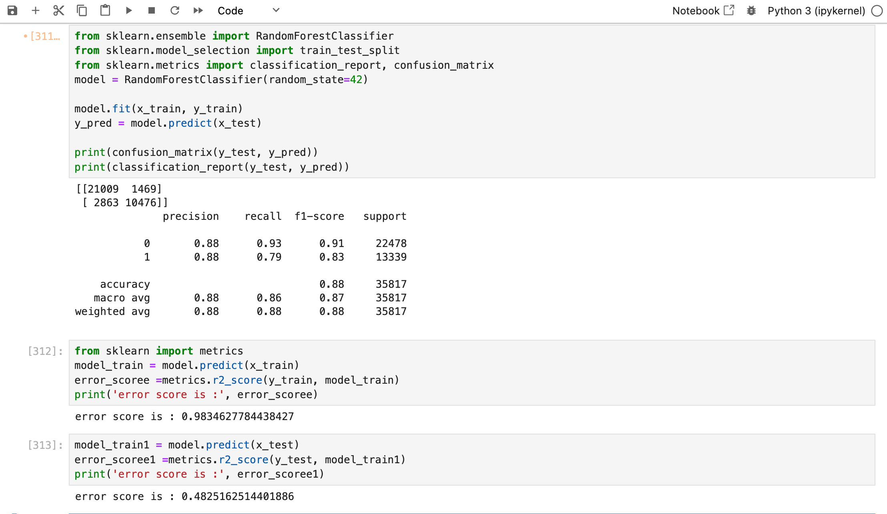

Hotel Ops – Guest Cancellation Prediction Dashboard
Overview: Built an ML-powered dashboard to predict guest cancellations, enables proactive resource allocation and reducing operational risk in hotel management.
Impact: Enables hotel staff to identify high-risk bookings at a glance, reducing last-minute cancellations and improving operational efficiency.
Project Case Study



Results & Impact
Prediction Accuracy / Reliability
predicted ~85% of cancellations on historical booking data, demonstrating robust reliability.
predicted ~85% of cancellations on historical booking data, demonstrating robust reliability.
Operational Efficiency
Reduced wasted room inventory and streamlines the check-in process by flagging high-risk cancellations early.
Reduced wasted room inventory and streamlines the check-in process by flagging high-risk cancellations early.
Revenue Protection
Proactive cancellation prediction would help hotels recover otherwise lost bookings, potentially boosting occupancy rates and reducing leakage.
Proactive cancellation prediction would help hotels recover otherwise lost bookings, potentially boosting occupancy rates and reducing leakage.
Time Savings for Staff
By automating guest follow-ups and alerts, the system could save front desk staff 20–30% of time usually spent managing last-minute cancellations.
By automating guest follow-ups and alerts, the system could save front desk staff 20–30% of time usually spent managing last-minute cancellations.